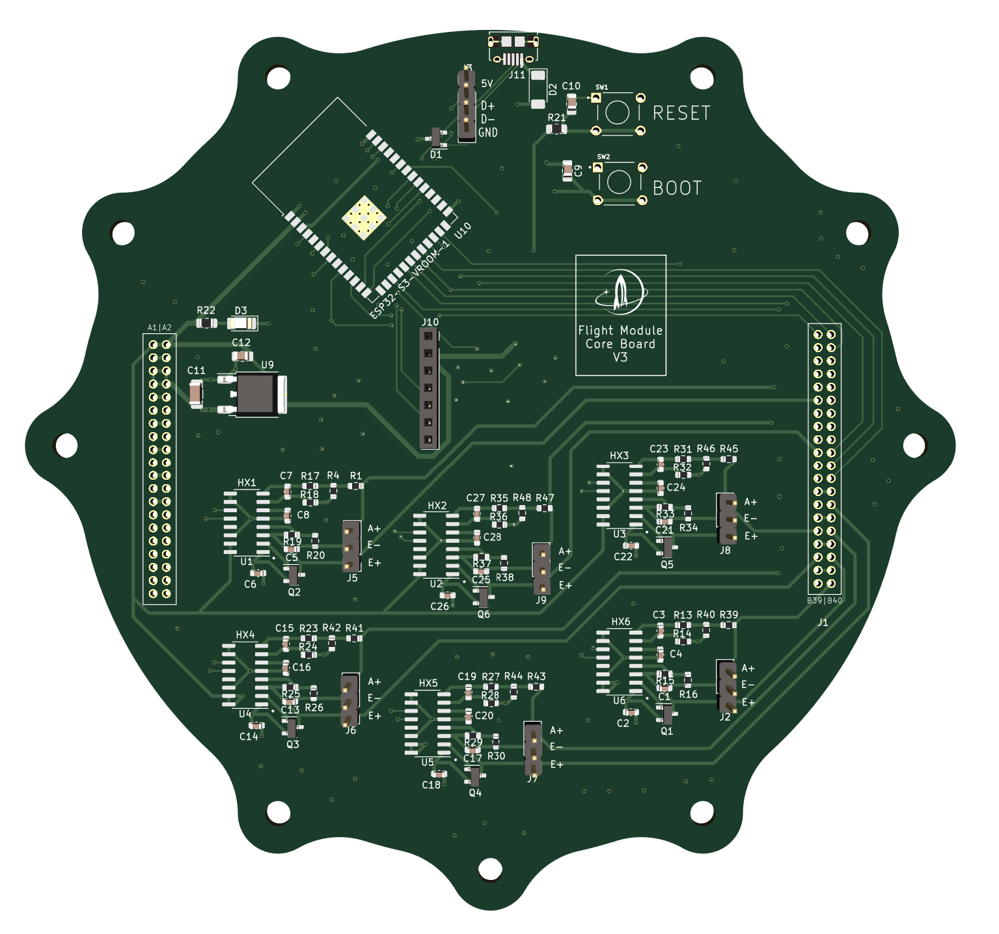

Technical Project Manager: Liquid-Powered Rocket
Project Overview
Led a student team to develop and launch a LOX/Ethanol competition flight vehicle.
Key Contributions:
- Leadership of 30+ individuals in technology, finances, and team dynamics.
- Pioneered Instrumentation, Signal Processing, Communication, and Control System Avionics.
- Designed fluid and combustion systems involving custom simulations like Smoothed-Particle Hydrodynamic analysis.
- Optimized engine thrust & vehicle flight profiles using data from extensive ground testing.
